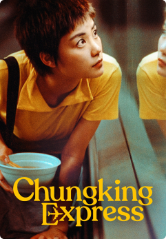

Wong Kar-wai is a renowned Hong Kong filmmaker and screenwriter, celebrated for his unique visual style and emotionally resonant storytelling. Born on July 17, 1958, in Shanghai, China, Wong Kar-wai moved to Hong Kong at the age of five. He began his career in the film industry as a screenwriter and later transitioned to directing. His films often explore themes of love, longing, and the passage of time. Wong Kar-wai gained international recognition with his film "Days of Being Wild" in 1990. However, he achieved widespread acclaim and fame with his movie "Chungking Express" in 1994, which became a cult classic. His other notable works include "Happy Together" (1997), "In the Mood for Love" (2000), and "2046" (2004). His distinctive directorial style is characterized by visually stunning cinematography, intricate narrative structures, and deeply emotional characters. Wong Kar-wai is known for his collaboration with cinematographer Christopher Doyle, whose innovative camerawork has become a trademark of Wong's films. Throughout his career, Wong Kar-wai has received numerous awards and honors, including the Best Director award at the Cannes Film Festival for "Happy Together" and the Grand Prix for "In the Mood for Love." His films continue to be studied and admired by cinephiles and filmmakers worldwide, making him one of the most influential directors in contemporary cinema.
"Chungking Express" is a critically acclaimed Hong Kong film directed by Wong Kar-wai, released in 1994. The film is celebrated for its unique narrative structure, innovative cinematography, and emotionally resonant storytelling. Set in the bustling streets of Hong Kong, "Chungking Express" is divided into two loosely connected stories, both revolving around themes of love, loneliness, and fate. The first story follows a police officer (played by Takeshi Kaneshiro) who is heartbroken after his girlfriend leaves him. He becomes involved with a mysterious woman (played by Brigitte Lin) who is a smuggler. The second story centers around another police officer (played by Tony Leung) who becomes enamored with a quirky waitress (played by Faye Wong) in a fast-food restaurant. As both stories unfold, they explore the fleeting nature of relationships and the random encounters that can change the course of one's life. What makes "Chungking Express" stand out is its innovative visual style, characterized by dynamic camerawork, neon-lit cinematography, and a pulsating soundtrack. The film captures the frenetic energy of Hong Kong and creates a dreamlike atmosphere that immerses the audience in the characters' emotional experiences.
"Fallen Angels" is a 1995 Hong Kong film directed by Wong Kar-wai. Often considered a spiritual companion to his earlier work "Chungking Express," the film is renowned for its stylized cinematography, fragmented narrative, and exploration of themes such as love, urban alienation, and existentialism. Set in the neon-lit streets of Hong Kong, "Fallen Angels" weaves together multiple storylines involving hitmen, a mute ex-convict, and a disillusioned woman. The characters are intricately connected through their lonely lives and chance encounters, creating a portrait of urban isolation and longing for human connection. The film is characterized by its visually striking imagery, rapid editing, and atmospheric soundtrack, which enhance the overall mood of melancholy and ambiguity. Like many of Wong Kar-wai's works, "Fallen Angels" has garnered praise for its artistic and experimental approach to storytelling, making it a cult favorite among cinephiles.